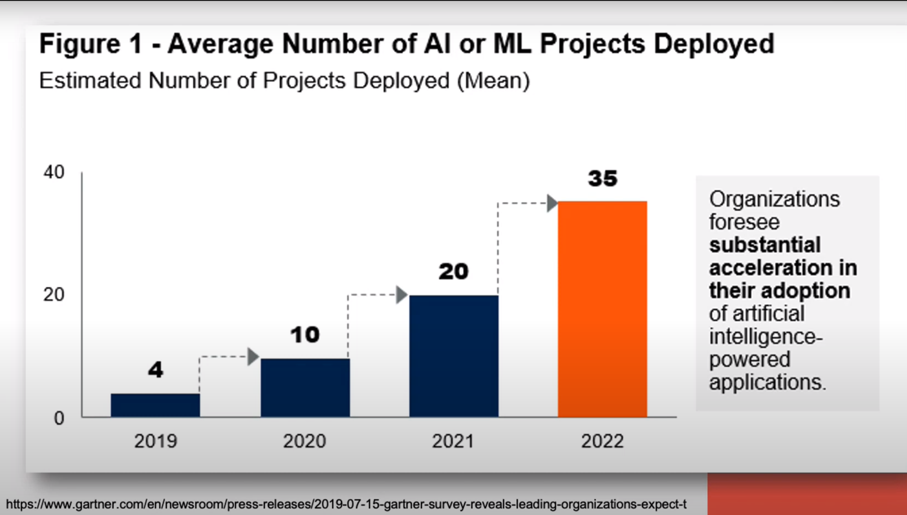
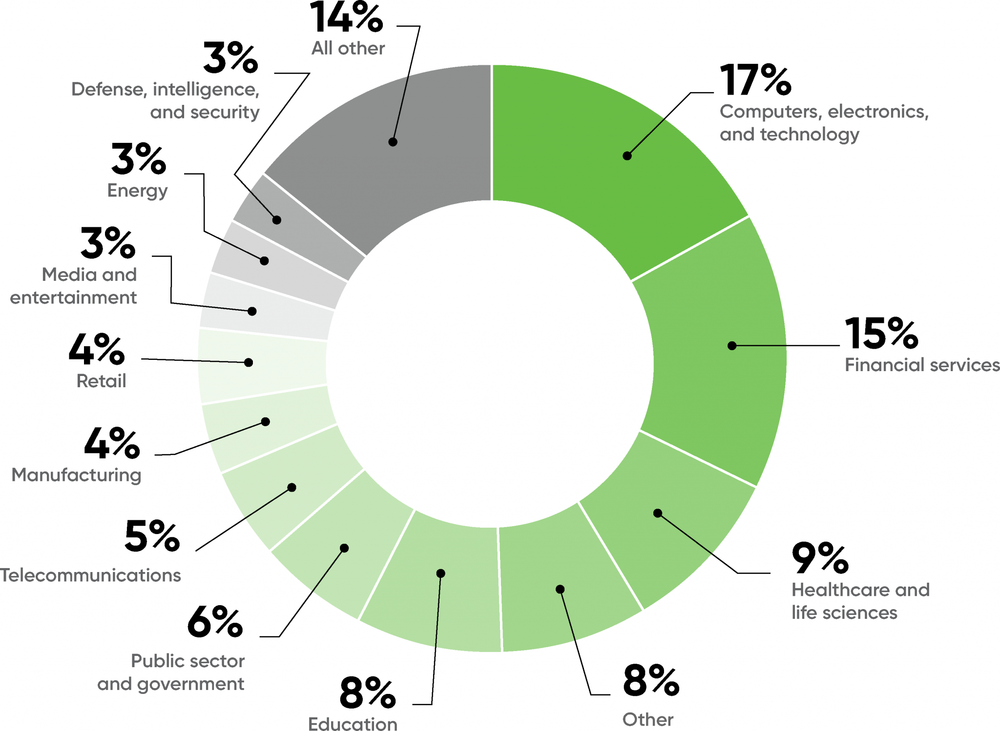
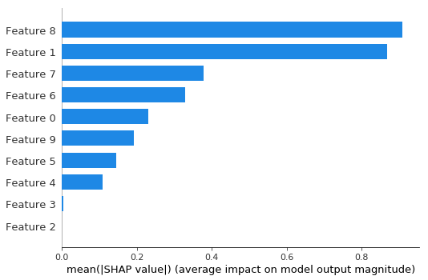
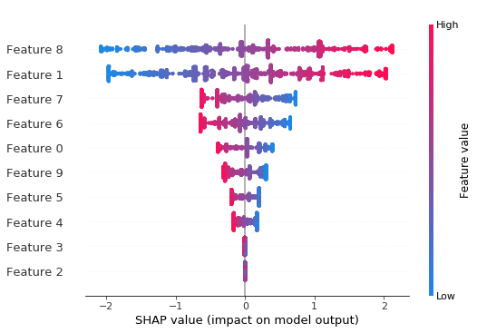
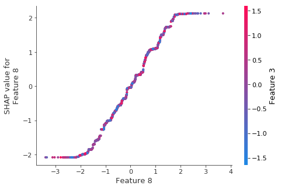

Course

Course Goals
- The XAI course provides a comprehensive overview of explainable AI,
- covering both theory and practice, and
- exploring various use cases for explainability.
- Participants will learn how
- to generate explanations,
- to evaluate explanations, and
- effectively communicate these to diverse stakeholders.
Session Description
- In this introduction lecture on explainability in AI, we will delve into the key topics that surround this emerging field.
- Overall, this lecture will provide a comprehensive introduction to explainability in AI, covering the key topics and terminology that are essential for understanding this field.
Session Description
- Motivate explainability.
- Explore how it achieve greater transparency and trustworthiness in AI systems,
- Provide the the key terminology
- Discuss the differences between global and local explanations
- Examine the “built-in” feature importance methods commonly used for regression and trees.
Session Video
Speakers
{kind=link}
Introduction to XAI
What is Explainability?
{kind=link}
What do we mean by Explainability?
- We define explainability by:
“The ability of an AI system or algorithm to explain its decision making process in a way that humans can understand” 1
An explanation is the answer to a why question – (Miller 2017)
What do we mean by Explainability?
The capacity of an model to back predictions with a human understandable interpretation of the impact of inputs on predictions.
- What humans find understandable differs widely.
- Learning in ML can differ greatly:
- Parametric models learn a handful of parameters,
- Non-parametric model may learn billions.
- Explanations are subjective
- Artifacts of the model, not the data
- Reflect any inductive bias in the model 2
Agenda
Talk Agenda
- Motivation
- What is XAI
- Introduction to trees
- XAI in the forest
Motivation
- AI market size is rapidly expanding and projected to reach 1.6 Billion by 2030 (Research, n.d.)
- More ML projects are reaching deployment
Motivation
{kind=link}
Motivation

Motivation

How can XAI be useful?
XAI to Avoid Biases in ML Models
{kind=link}
- Source of the bias is that they trained on 10 years of worker’s CVs. surprise their workforce had a bias and the model perpetuated it.
XAI to Avoid Biases in ML Models
- XAI can reveal bias before models reach production.
- Example:
- A US based client started doing business abroad.
- New non US prospects were misclassified.
- 🤯 XAI showed the country biased against non US prospects.
- \implies dropped the country feature from the model.
XAI to Avoid Biases in ML Models - Comments 1
- Devils Advocate:😈
- Q. Why add a features like country if all activity is in one country?
- Q. Why drop it? Won’t country be an informative feature going forward?
- Q. Won’t this be an issue for each new country added?
- \implies Partial Pooling can learn to strike a balance 🤔
XAI to Avoid Biases in ML Models - Comments 2
{kind=link}
XAI to Avoid Biases in ML Models - Comments 3

- adding more criteria will reduce its performance on the main metric (i.e. variance).
- people tend to like a biased estimator with small variance to unbiased one with high variance.
- it looks like a class imbalance problem for which there are well know solutions like re-sampling and weighting.
- the datasets in upstream models may be the issue
- how can we detect and correct in these models.
- ignoring for the moment the costs of sourcing better data what do we do when the bias comes from the real world (gender gap in payment).
- and how can we avoid making the bias bigger?
XAI to Avoid Biases in ML Models
{kind=link}
{kind=link}
XAI to Avoid Biases in ML Models
- Predicting which prospective customers will convert
- current market is is in the US
- Model accuracy on test is high
- Predictions distribution over time is off?
- What to do next?
Feature selection
{kind=link}
One learns in linear regression 101, that the \text{adjusted } R^2 let’s you gauge the performance of models built with different features. This means we already should have a principled approach to feature selection.
the most obvious method – stepwise regression is prone to overfitting if there are many features and the Bonferroni point 3 which governs the admissibly of non-spurious features is \approx \sqrt{2\log p} for the t-test (where p is the number if predictors). However this is will reject good features.
the Benjamini–Hochberg procedure procedure is less conservative and avoid the use of p-values which are amenable to p-hacking.
In black box model like a Deep Neural Networks the model learns its own features so again I don’t see how XAI is going to be able to help out.
Gelman and Hill (2007) pointers out that adding features to a regression can lead to a regression formula that does not make sense. They suggest a procedure that lead to an interpretable model. However the culture in ML is rather different than in statistical learning.
If we work with a Causal DAG we may well de have even more to say on the
Q. So what more can XAI informs us as to features selection?
XAI to Investigating Bugs 1
 |
|
 |
XAI to Investigating Bugs 2
 |
XAI to support business decisions
- External data consumption to improve prediction
- Explainability to create a personalized well suited sales pitch
Who Needs Explanations ?
{kind=link}
Explaining the Data vs. Explaining the Model
Feature Description
- Characteristics of the input data
- E.g.:
- Feature correlation
- Anomalies & Extreme values
- Feature values distribution
Feature Contribution
- Feature’s impact on predictions
- Not aligned with feat. correlation to target variable
- E.g.:
- Feature importance in trees
- SHAP values
{kind=link}
Properties of Explanations
White Box
- An interpretable model.
- Humans can understand how the model makes predictions.
- Examples:
- linear and logistic regression
- decision tree
Black Box
- Do not reveal their internal mechanisms
- Cannot be understood by looking at their parameters
- Examples:
- Deep Neural Nets
- XGBoost, Random Forest
Properties of Explanation Methods
- Predictive mode interpretation level
- Explanation creation time
- Model Agnostic vs. model specific
- Global and Local explanations
- Explanation structure
- Explanation reproducibilty
Performance & Interpretability Trade-off
{kind=link}
Performance & Interpretability Trade-off
{kind=link}
Intrinsic & Extrinsic Methods
Intrinsic
- ML model that are considered interpretable due to their simple structure.
- Explanation methods that rely on looking into ML models, like its parameters
- No additional complexity or resources requires
Extrinsic
Applying methods that analyze the model after training
Post hoc methods can also be applied to intrinsically interperetable models
Additional complexity - XAI algorithms and computation resources requried
Post Hoc XAI using Surrogate Models
{kind=link}
Model Specific & Model Agnostic Methods
Model Specific
- Limited to specific model type.
- Examples:
- Regression weights in a linear model
- GINI importance score in a decision tree
Model Agnostic
- XAI tools for any ML Model
- Pos hoc methods that
- Map input output pairs
- Examples:
- SHAP
- LIME
Local and Global Methods
{kind=link}
Explain the Predictions of a Segment
{kind=link}
Explanation Structure
{kind=link}
Graphs Representation for SHAP
  
{kind=link}
Explanation Repoducibility
Most post hoc techniques use random samples of the data and premutation vlues
This results in inconsistant results - for the same model we can get different explanations.
As data scientists we should be aware of this and consider consistanc if applicable/required.
{kind=link}
{kind=link}
Part 1 Summary
The demand for XAI is high
XAI can be achieved in many ways
Think about the set of considerations discussed before choosing a method4
Choose wisely
Disicion Trees
Why Decision Trees?
Easy to explain.
Clear structure - order and hierarchy.
Simple interpretability.
Can be converted into rules.
Often used as a surrogate model
How do we build Decision Trees?
Entropy - the measurement of the impurity or randomness in the data points
Information Theory: Entropy
{kind=link}
{kind=link}
{kind=link}
Information Theory: Conditional Entropy
{kind=link}
Information Theory: Mutual Information
{kind=link}
{kind=link}
Decision Tree
{kind=link}
Example
{kind=link}
Decision Tree - Entropy Calculation
{kind=link}
{kind=link}
{kind=link}
{kind=link}
{kind=link}
{kind=link}
{kind=link}
{kind=link}
{kind=link}
{kind=link}
{kind=link}
{kind=link}
{kind=link}
{kind=link}
{kind=link}
{kind=link}
{kind=link}
{kind=link}
{kind=link}
{kind=link}
\begin{aligned} Entropy(Play)&= -p_{No}\log(P_{No})-p_{Yes}\log(P_{Yes})\\ &= -\frac{5}{14}\log_2{\frac{5}{14}}-\frac{9}{14}\log_2{\frac{9}{14}}\\ &=0.94 \end{aligned} \qquad \tag{1}
Information Theory: Discretization
{kind=link}
{kind=link}
{kind=link}
{kind=link}
{kind=link}
{kind=link}
{kind=link}
{kind=link}
Information Theory: Gini Index
{kind=link}
Entropy and Gini

{kind=link}
Decision Tree - Iris Dataset
{kind=link}
{kind=link}
{kind=link}
{kind=link}
{kind=link}
Decision Tree - Titanic Dataset
{kind=link}
{kind=link}
{kind=link}
{kind=link}
{kind=link}
{kind=link}
{kind=link}
{kind=link}
Feature Importance - Mean Decrease in Impurity (MDI)
First introduced in (Breiman 2001b)
{kind=link}
{kind=link}
{kind=link}
{kind=link}
{kind=link}
{kind=link}
{kind=link}

{kind=link}
{kind=link}
Feature Importance - Permutation Feature Importance
This is defined by sk-learn as follows:
- Inputs: fitted predictive model m, tabular dataset (training or validation) D.
- Compute the reference score s of the model m on data D (for instance the accuracy for a classifier or the R^2 for a regressor).
- For each feature j (column of D):
- For each repetition k in 1,\ldots,K:
- Randomly shuffle column j of dataset D to generate a corrupted version of the data named \bar D_{k,j}.
- Compute the score s_{k,j of model m on corrupted data \bar D_{k,j}.
- Compute importancei_j for feature f+j defined as:
- For each repetition k in 1,\ldots,K:
i_j=s-\frac{1}{K}\sum_{k=1}^Ks_{k_j} \qquad \tag{2}
{kind=link}
{kind=link}
{kind=link}

Random Forest
introduced in (Ho 1995) and extended in (Breiman 2001a).
Ensemble of decision trees.
N – number of training samples
M – number of features
n_estimators – The number of trees in the forest
Create n_estimators decision trees using
N samples with replacement
m<M features for each step typically m-\sqrt{M}
{kind=link}
Decision Tree - Iris Dataset
{kind=link}
MDI Feat Importance Iris Dataset

How to calculate Feature Importance in Random Forest?
{kind=link}
{kind=link}
{kind=link}
{kind=link}
{kind=link}
Feature Importance Methods
{kind=link}
Feature Importance Score
{kind=link}
Summary
- Motivation
- Explain XAI
- Introduction to decision Trees
- XAI in the Forest
Thank You
{kind=link}

References
- https://www.youtube.com/watch?v=6qisPX7o-bg
Footnotes
Unfortunately, this is a circular definition.↩︎
Trees are highly sensitive to small changes in the data↩︎
The Bonferroni point, or adjusted p value is the point at which you need to adjust the p-value threshold due to multiple comparisons when performing feature selection . In simpler terms, it’s about accounting for the increased chance of falsely identifying significant features when you test many features simultaneously↩︎
The last lecture provides some insights and charts to assist this step!↩︎
Reuse
Citation
@online{bochman2023,
author = {Bochman, Oren},
title = {Introduction to {XAI}},
date = {2023-03-05},
url = {https://orenbochman.github.io//notes/XAI/l01},
langid = {en}
}